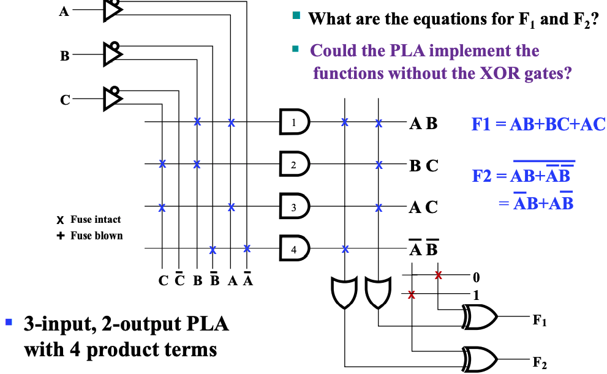

Chap 5 Digital Hardware Implementation
!!! warning "注意" 本章节在补天中完成，内容可能比较简略。
可重编程技术
可重编程技术(programmable implementation technologies)
直接更改电路来修改电路功能被称为硬编程，而可重变成技术让我们能够不更改硬件布线的情况下，实现逻辑功能的重新编辑。
!!! example "FPGA" - 现场可编程逻辑门阵列(Field Programmable Gate Array)FPGA - 查找表(lookup table)LUT
编程技术(programming technologies) 在硬件层面有三种实现手段：
- 控制连接来实现（不是可重编程）；
- Mask programing（掩码编程）
- Fuse（保险丝）
- Anti-fuse
- 控制门级电路电压；
- Single-bit storage element
- Stored charge on a floating gate
- Erasable
- Electrically erasable
- Flash (as in Flash Memory)
- 使用查找表(LUT)；
- Storage elements for the function
- 比如使用一个
MUX，并将输入端接内存，通过修改内存的值来修改MUX的行为，进而实现函数重编程
- 比如使用一个
- Storage elements for the function
课程中介绍的可重编程的器件主要有如下四种：
- 只读内存 Read Only Memory (ROM)
- 可编程阵列逻辑 Programmable Array Logic (PAL^Ⓡ^)
- 可编程逻辑阵列 Programmable Logic Array (PLA)
- Complex Programmable Logic Device (CPLD) or Field-Programmable Gate Array(FPGA)
前三者都只能重写一次，如下是它们的重写内容：

!!! info "引入" 由于之后出现的电路图会非常庞大，所以需要引入一些逻辑符号。
逻辑符号介绍
!!! example "Buffer——简化表示一个变量的自身和其非"

!!! example "Wire connecting" 在可编程逻辑电路中，线的连接不再只有单纯的连通和不连通的关系：
对于两条相交导线：
- 如果没有特殊符号，则表示这个交叉点 is not connected ；

- 如果有一个 ❌，则表示这个交叉点 programmable；

- 如果只有一个加粗的点，则表示这个交叉点 not programmable；

特别的，如果一个元器件的所有输入都是 programmable，我们也可以选择把这个 ❌ 画到逻辑门上（如下图 e 和 f）。
ROM
ROM 的基本结构如下：

而 ROM 的大小如下计算（以上图为例）：
$$ \begin{aligned} ROM\;\;size\;\;&=\;\;address\;\;width\;\;\times\;\;word\;\;width&\ &=\;\;2^2\;\;\times\;\;4\;\;=\;\;16\;\;bit& \end{aligned} $$
!!!+ example "eg" 更清晰的表示其内部逻辑的，可以将 ROM 写成这样：
PAL
可重编程输入组合来得到固定输出。
其具有一个缺陷是，因为表达函数的方法不是通过 SOM 或者 POM 的形式，所以不一定能够完备表达函数。
在此基础上的一个改进是，通过将一个既有的 PAL 输出当作输入，输入到另外一个函数中，来弥补项不足的问题。
???+ example "eg"

PLA

与 PAL 的区别在于，在输出的时候也能对输出组合进行重编程。
其同 PAL 一样具有一个缺陷是，因为表达函数的方法不是通过 SOM 或者 POM 的形式，所以不一定能够完备表达函数。
在基础上一个改进是在输出的时候再做一次异或（不用非门体现了可重编程的思想），以产生新的项，来弥补项不足的问题。 Attention:注意XOR的作用！！！

可以发现，出现了新的项。
Lookup Tables
通过让数据源接内存，并通过修改真值表内的值，即修改内存里的值，来实现数据源的变化，来改变 MUX 的行为。
但是实际应用中，函数输入的数量会变化，因此我们需要通过灵活组合的方法（比如通过四选二选一的方式，用三个二选一的 MUX 来实现四选一）来实现多输入。
常见的 LUT 大小以 16bits 或 64bits 的 4 输入或 6 输入为主。
由于 LUT 存的本质上是真值表，所以它可以实现任意输入符合要求的逻辑函数。
所以，问题就变化为如何用较小的 LUT 来组合实现复杂的逻辑函数。
LUT 的基本结构如下：
FPGA 的基本结构如下：

其主要分为三个组成部分：
- CLB(Configurable Logic Block)
- 大量存储
LUT
- 大量存储
- SM(Switch Matrix)
- 可编程的交换矩阵
- IOB(Input & Output Block)
- 可编程的输入输出单元
CLB
CLB 是 FPGA 中的基础逻辑单元。

SM
通过相当复杂的算法， SM 会根据目标逻辑，选择链接不同的 CLB 以实现复杂逻辑。
它具有这些基本属性：
- Flexibility: 评估一条线可以连接到多少线；
- Topology: 哪些线可以被连接到；
- Routability: 有多少回路可以被路由；

IOB
IOB 用来对外部设备进行连接，用来控制输入和输出。

!!! note "eg for FPGA"
通过 FPGA 实现 $f=x_1x_2+\overline{x_2x_3}$：
分解问题：
$f_1 = x_1x_2,\;\;f_2=\overline{x_2x_3},\;\;f=f_1+f_2$。

在软件层面编程完后，会生成位流文件(bitfile)，下载到板时会更新 FPGA 中的内容。
!!! summary "组合函数的实现方法" 到目前为止，不管是可重编程还是不可重编程，都已经介绍了很多方法，这里进行一次小结：
1. `Decoder`s & `OR` gates
- 将译码出来的需要的目标组合都 `OR` 在一起；
2. `MUX`s
- 通过多路选择器实现任意逻辑函数；
3. `ROM`s
4. `PAL`s
5. `PLA`s
6. `LUT`s